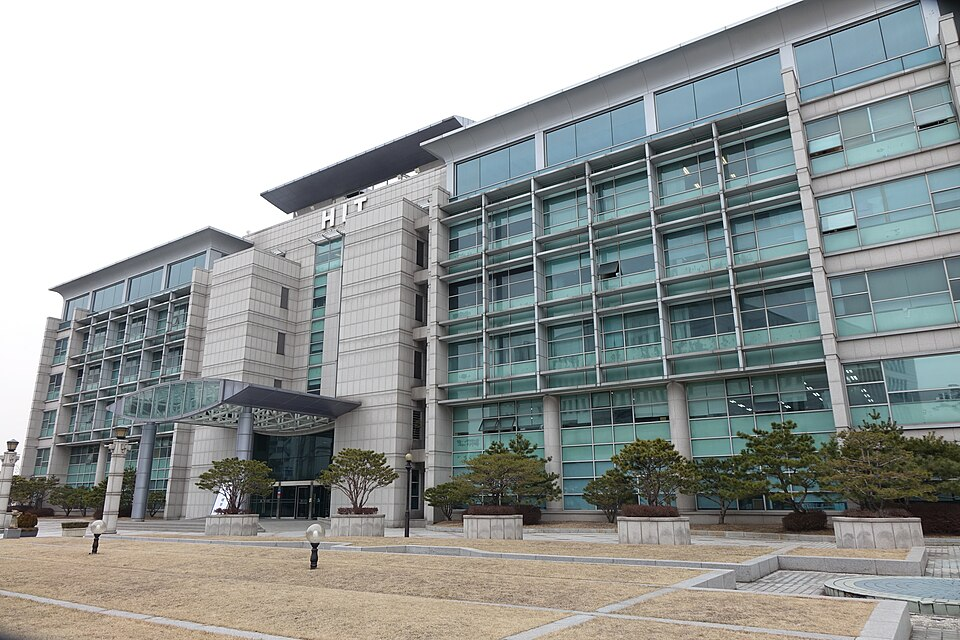

한양대학교 2027학년도 정시 표를 펴면 계열이 세 줄로 갈립니다. 그리고 세 줄의 1순위 과목이 전부 다릅니다. 그래서 “한양대 정시 준비”라는 말만으로는 시간표를 짤 수 없습니다. 이 글은 전형 소개가 아니라, 그 표를 “그래서 어느 과목을 먼저”로 바꿔 읽는 글입니다. 고3 수학과외에 얼마를 쓸지 정하는 기준이 됩니다.
| 계열 | 국어 | 수학 | 영어 | 탐구 |
|---|---|---|---|---|
| 자연계열 | 25% | 40% | 10% | 25% |
| 인문계열 | 35% | 30% | 10% | 25% |
| 상경계열·의류학과·실내건축디자인학과·한양인터칼리지학부 | 35% | 35% | 10% | 20% |
예체능 계열은 계열별로 반영 구조가 따로 정해져 있어 이 표에 넣지 않았습니다.
자연계열은 수학 40%로 압도적입니다. 국어와 탐구가 각각 25%이니, 수학 한 과목이 나머지 두 과목을 합친 것의 80% 무게를 가집니다. 반면 인문계열은 국어 35%가 1순위이고 수학이 30%로 그다음입니다.
가장 눈여겨볼 줄은 세 번째입니다. 상경계열은 국어와 수학이 35%로 똑같습니다. 어느 한쪽을 먼저 놓을 근거가 표 안에 없다는 뜻이고, 그래서 두 과목 중 더 흔들리는 쪽이 자동으로 1순위가 됩니다. 대신 탐구가 20%로 세 줄 중 가장 가볍습니다.
정리하면 이렇습니다. 자연계열 지망생은 수학, 인문계열 지망생은 국어, 상경계열 지망생은 국어·수학 중 약한 쪽. 학과를 아직 못 정했다면 이 세 줄 중 어디로 가도 손해가 적은 조합을 먼저 만들어 두는 것이 안전합니다.
세 줄 모두 영어가 10%입니다. 반영비율만 보면 가장 가벼운 영역입니다. 다만 영어는 등급에 따른 환산점수로 들어가기 때문에, 등급이 한 칸 내려가면 그만큼 총점이 깎이는 구조라는 점은 같습니다. 등급별 구체적인 환산점수는 출처마다 정리가 달라 이 글에서는 적지 않았습니다.
실전에서 쓸 수 있는 기준은 이렇습니다. 영어는 올리는 과목이 아니라 지키는 과목으로 두는 것입니다. 지금 등급을 유지할 만큼만 주 단위로 꾸준히 손대고, 남는 시간은 40%·35% 칸에 넣습니다.
한양대학교 2027학년도 수능위주전형에는 학생부종합평가가 10% 반영됩니다(예체능 제외). 학교생활기록부의 출결, 봉사활동, 교과학습발달상황, 행동특성 및 종합의견 등을 참고해 학업역량과 학교생활 성실도를 평가합니다.
정시를 준비하는 재학생에게 이 칸이 주는 메시지는 분명합니다. 정시로 방향을 잡았다고 학교생활을 놓으면 그 자체로 점수가 됩니다. 수능 공부 시간표를 바꿀 이유는 없지만, 남은 학기 출결과 수업 태도를 따로 관리할 이유는 생깁니다.
학생 수준에 맞는 선생님을 24시간 안에 추천해 드려요. 상담은 무료입니다.